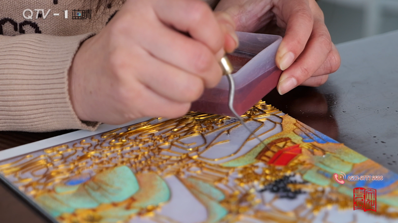
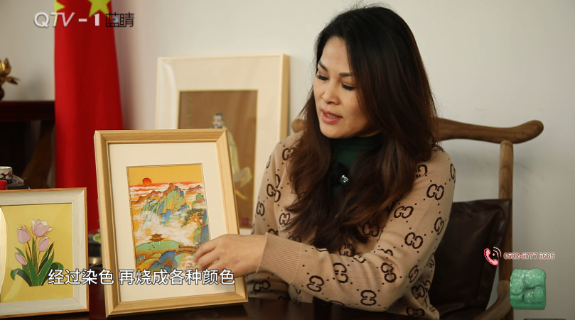
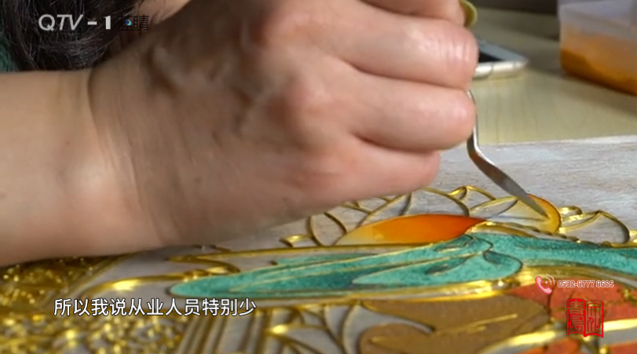

中国掐丝珐琅传承网
中国掐丝珐琅传承网
00
-
00
-
00
中国掐丝珐琅传承网
来源：“文化青岛QD” 微信公众号
2024.12.08
“大家好，我是邵海珍，非遗景泰蓝技艺第四代传承人，深耕行业22年了，现在是山东省工艺美术大师。这一次崂山区举办的“山情海韵”，这么一个文创大赛非常有意义，让我们这一些手艺人得到了一个展示和成长。我获得了这个奖项，也是非常激动，我以后会把这一份荣誉化成动力去做更多的贡献。
景泰蓝这个技艺已经距今有600多年的历史了，那时候颜色以蓝色为主，所以我们俗称它为景泰蓝，它的学术名称其实就叫掐丝珐琅。珐琅有八个品类，一共有那么8种制作。其中掐丝珐琅只是其中的一个品类而已，所以珐琅这两个字说的就是它这个颜色，它这个色彩就是天然矿石，然后经过染色，再烧成各种颜色，再磨成颗粒状，金色的线条部分就是金属丝，所以它这个工艺再加上它的原材料是永久不变色的。
我原来是画工笔画的，当我遇见掐丝珐琅的时候，我非常震撼，我师父是李佩卿，国际工艺美术大师，做景泰蓝做了54年，我自己也深耕了好多年，我师父也说过，这个古老的技艺，你应该去继承，你也要把现代的一些元素，一些生活理念、审美，都要添加进去。因为毕竟欣赏你作品的是现代人。所以崂山实地写生的12个景点，我就用中国的青绿山水风格国画的着色，创作了一个系列。这一次的文创大赛，崂山的十二景色，每一个景点都做了一个作品。
这是参赛的作品其中的一幅——巨峰旭照，它这个材料就是我们最正宗的珐琅釉料、金属丝，然后再加上传统的技艺，刚才我说的那些画面感，其实就是现代的一些元素，把它结合进去。这幅巨峰旭照创作的时候，它就是以中国的青绿山水风格，国画的一个着色创作的这一幅作品。所以这个旭日也代表我们国家蒸蒸日上、富强。
让大家来青岛崂山旅游，能让他们记住崂山，能让他记住这个用咱们国家的古老的技艺创作的这些作品。
我们前一段时间，在王哥庄、唐家村成立了一个乡村振兴项目，也得了优秀的一个奖项。有一部分村民，他们闲下来的时候，去做掐丝珐琅，给他们提供了一些就业机会。
我们现在也进入校园，设置了非遗体验课程、非遗选修课，有很多的大学生，他们学专业美术设计，非常愿意去体验一下景泰蓝，每一个学期课数也不少，非常认可。我们还在公益方面做了一些努力，像残疾人、弱势群体，我都免费让他们去学，给他们开免费的课，甚至我都给他们提供这些免费的材料。想为这个社会做一些我们力所能及的一些事。
我们国家在2006年把景泰蓝作为国家级的非遗纳入第一批非遗项目，我从事这么多年，积累了非常多的一些经验，而且还有一些新的技法，在山东省省级类的景泰蓝类别工艺美术大师，就我一个，从业人员特别少。我愿意把它传承给别人，我希望这个技艺，我传承的一些古老的技法，再加上我积累的一些新的包括那些专利技术，能帮助到别人，因为我做了这么多年，我总结出来就是，当你有老师指点你的时候，你就迅速成长起来了，你就迅速地缩短学习的一个距离，那么你剩更多的时间，你可以研究更多的东西，这样才好。”